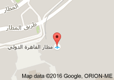
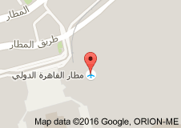

سيارات الأجرة في القاهرة ملونة باللونين الأبيض والأسود و يسهل العثور عليها في الشوارع. عيبها الوحيد هو عدم وجود سعر ثابت للأجرة، لهذا السبب لا يحدد سكان القاهرة أي سعر قبل ركوب سيارة التاكسي حيث أنهم يستطيعون تقدير الأجرة إلا أن تقدير الأجرة قد يكون صعباً على السياح الجدد لذا يجب التفاوض مع السائق قبل ركوب التاكسي حتى لو سبب هذا ارتفاعاً طفيفاً في السعر. أيضا، تأكد من حصولك على الباقي عند إعطاء الأجرة للسائق و ذلك لأن سائقي سيارات الأجرة لا يرغبون في إعادة المتبقي من الأموال و يعتبرونها بقشيشاً. و من الطبيعدم إعطاء البقشيش لسائقي الأجرة. تكلفة سيارات الأجرة الواقفة بالقرب من الفنادق تكون 10 جنية للكيلومتر الواحد، في حين أن سيارات الأجرة في الشوارع عادة ما تكلف نحو 5 جنيه لكل كيلو متر.
ميكروباص (ج ميكروباصات) هو عربة لنقل الركاب، تتسع لعدد يتراوح ما بين 8 الي 14 راكب. يستخدم الميكروباص عادة لنقل الركاب بالأجرة، وقد تستخدمه الشركات الخاصة لنقل الأفراد العاملين. ولا سيما العائلات كبيرة العدد قد تقتني ميكروباص للتنقلات اليومية. وقد يُستخدم أيضًا للنقل السياحي. أصل تسمية ميكروباص هو دمج ميكرو-باص أي «الحافلة متناهية الصغر». استحدثت الي العربية من الاسم الذي أطلقته شركة فولكس فاغن علي أحدي موديلاتها من الحافلات الصغيرة التي أٌعطيت هذا الاسم لتميزها عن الحافلة التي تليها في الحجم «Minibus» أو الحافلة الصغيرة. ولا تُميّز عادة اللهجات العربية بين المينيباص والميكروباص.
مواعيد قطارات سكك حديد مصر غدا الخميس، 02 6وليه 2015 04:32 ص نقدم لكم مواعيد قطارات سكك حديد مصر الصعيد ومواعيد قطارات سكك حديد مصر القاهرة الإسكندرية والعكس
(مواعيد قطارات لمصر لعام 2016 واسعار الرحلات)
البوكس: عربيات البوكس احد اهم وسائل الموصلات ف المناطق الشعبية و تمتاز ب رخص السعر و السرعة و تقليل الازدحام و زيادة وسائل الموصلات و هو اختيار جيد كوسيلة مصلات ف المناطق الشعبية .
يعتبر المترو في القاهرة خياراً جيداً جداً إذا ما قورن بالحافلات العامة. لكن المترو ليس فاخراً ولا يعمل إلا على خطين اثنين فقط في أنحاء القاهرة وجاري العمل حالياً على الخط الثالث. تم البدء في تشغيل المترو عام 1987 وله 53 محطة في جميع أنحاء المدينة تتقاطع جميعها مع محطتي رمسيس والسادات. العربات الوسطى من المترو للسيدات فقط.

من المستحسن عدم استخدام الحافلات العامة إن كنت تريد تنقلاً مريحاً في أنحاء القاهرة حيث أن الحافلات العامة عادة ما تكون مزدحمة و من غير المرجح أن تجد مقعدا. مع ذلك، هناك حافلات خاصة تدعى الميكروباصات -هي مزيج بين سيارة الأجرة و الحافلة- توفر راحة أكبر. هذه الحافلات تشبه الحافلات الصغيرة و هي ملونة باللون البرتقالي و الأبيض أو الأحمر، الأبيض، و الأزرق.

يتوفر في القاهرة الأتوبيس النهري، وهي وسيلة نقل نهرية تبحر في نهر النيل على امتداد ساحل القاهرة، ويتميز أنه لا علاقة له بالأزمات المرورية البريّة.
 

مطار القاهرة هو مطار يبعد عن وسط البلد (القاهرة) 22 كيلو مساحته حوالى 40 كيلو . المطار فيه اربع مدرجات ، المدرج الأولانى طوله 3.300 متر وعرضه 60 متر اما بقا المدرج التانى فهو طوله 4000 متر وعرضه 60 متر برده والمدرج التالت طوله 3.178 وعرضه 60 متر برده وده مابيستخدموهوش كتير والمدرج الرابع طوله 4000 متر وعرضه 65 متر .
العنوان: طريق المطار، محافظة القاهرة 11432
................
الهاتف:02 22655000
:اضغط هنا لمعرفة مزيد من التفاصيل
التاكسي الجديد : اذ كنت تبحث عن وسيلة موصلات سريعة و تصلك اينما كنت ويمكن لسائقها ان يكون مرشدا لك ف رحلتك ف التاكس الجديد هو الحل الامثل و لكنها تكلفتها غالية و ايضات في باقي محفظات القاهرة هناك الوان اخري للتاكسي مثل الاصفر و الابيض.
التوكتوك أو البجاج أو الركشة (بالهندية:हिन्दी) (جمع:تكاتك) هو مركبة نارية ذات ثلات عجلات، تستخدم غالبا كويسلة للانتقال بالاجرة. ينتشر التوكتوك بكثرة في البلاد الآسيوية ولا سيما في البلاد العربية وخصوصا في مصر والسودان. يتسع التوكتوك لراكبين بالمقعد الخلفي (أو ثلاثة محشورين بجانب بعض) بالإضافة الي السائق الذي يجلس في المقدمة.
{kind=link}
{kind=link}